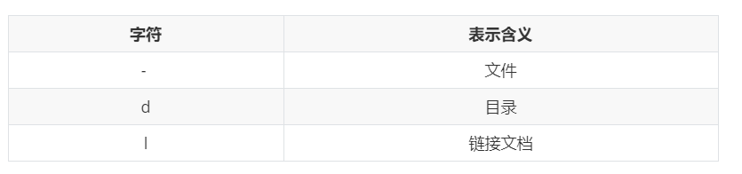

Linux实操-常用命令-文件权限类

文章目录
整型有4种进制形式：
- 十进制： 都是以0-9这九个数字组成，不能以0开头。
- 二进制：由0和1两个数字组成。
- 八进制： 由0-7数字组成，为了区分与其他进制的数字区别，开头都是以0开始。
- 十六机制：由0-9和A-F组成。为了区分于其他数字的区别，开头都是以0x开始。
| 二进制 | 八进制 | 十进制 | 十六进制 | 二进制 | 八进制 | 十进制 | 十六进制 |
|---|---|---|---|---|---|---|---|
| 0000 | 0 | 0 | 0 | 1000 | 10 | 8 | 8 |
| 0001 | 1 | 1 | 1 | 1001 | 11 | 9 | 9 |
| 0010 | 2 | 2 | 2 | 1010 | 12 | 10 | A |
| 0011 | 3 | 3 | 3 | 1011 | 13 | 11 | B |
| 0100 | 4 | 4 | 4 | 1100 | 14 | 12 | C |
| 0101 | 5 | 5 | 5 | 1101 | 15 | 13 | D |
| 0110 | 6 | 6 | 6 | 1110 | 16 | 14 | E |
| 0111 | 7 | 7 | 7 | 1111 | 17 | 15 | F |
文件属性
Linux系统是一种典型的多用户系统，不同的用户处于不同的地位，拥有不同的权限。为了保护系统的安全性，Linux系统对不同的用户访问同一文件（包括目录文件）的权限做了不同的规定。
在Linux中我们可以使用ll或者ls -l命令来显示一个文件的属性以及文件所属的用户和组。
使用者和群组
在 Linux 中，关于文件所有者分为三类，即文件所有者、群组和其他人所属，这里分别解释以下这三个概念。
-
文件所有者
Linux 是一个多用户多任务系统，多用户就意味着有些用户创建的文件是否对其他用户可见，这是一种可见性问题，同时也是一种隐私性问题，为了考虑到每个人的隐私权，Linux 设计了文件所有者的角色。如果你有一些资料和文件的隐私性比较高，你就可以把文件设置成 “只有我自己可见” ，这就是文件所有者的作用。
-
群组
群组的这个概念用在团队开发中，用处比较多的就是为项目设置权限，比如你就职于一个银行的外包部门，你和其他外包部门共同为某个银行服务，所有的外包团体都使用一台服务器，这就会涉及到群组权限的问题，你们外包部门开发的项目不想让其他外包部门所看到，就会把该项目设置成群组可见。但是银行是总负责人，所有银行具有查看你们所有外包部门项目的权限，因此，你还需要设置银行的权限。
-
其他人所属
其他人和群组是相对的，其他人在群组之外，没有权限查看群组内文件的一种权限关系。
除了上面三个概念之外，还有一个权限级别最高的大佬，它就是 root，这个 root 权限是最高的。
文件权限
在Linux中我们可以使用ll或者ls -l命令来显示一个文件的属性以及文件所属的用户和组。
文件基本属性
一共有七列内容，这七列内容如下图所示。
文件权限说明
文件权限从左到右一共十个字符，说明如下：
如果没有权限，就会出现减号[ - ]而已。从左至右用0-9这些数字来表示：
-
0位表示类型，在Linux中第一个字符代表这个文件是目录、文件或链接文件等等

-
第1-3位表示属主（该文件的所有者）拥有该文件的权限，–user
-
第4-6位确定属组（所有者的同组用户）拥有该文件的权限，—Group
-
第7-9位确定其他用户拥有该文件的权限，—Other
rwx 作用解释
rwx 作用文件和目录的不同解释
| 作用到文件 | 作用到目录 | |
|---|---|---|
| r | 代表可读(read):：可以读取，查看 | 代表可读(read)：可以读取，ls查看目录内容 |
| w | 代表可写(write):：可以修改，但是不代表可以删除该文件，删除一个文件的前提条件是对该文件所在的目录有写权限，才能删除该文件 | 代表可写(write)：可以修改，目录内创建+删除+重命名目录 |
| x | 代表可执行(execute)：可以被系统执行 | 代表可执行(execute)：可以进入该目录 |
chmod 改变权限
-
基本语法
1 2 3 4# 第一种方式变更权限 chmod [选项] [{ugoa}{+-=}{rwx}] 文件或目录 # 第二种方式变更权限 chmod [选项] [mode=421 ] [文件或目录] -
说明1
- u：所有者
- g：所有组
- o：其他人
- a：所有人(u、g、o的总和)
- +：加权
- -：减权
- =：重新赋予
-
说明2
- r=4
- w=2
- x=1
- wx=2+1=3
- rx=4+1=5
- rw=4+2=6
- rwx=4+2+1=7
- 第二种修改方式中的4，2，1，7其实是二进制与十进制的对应关系。就是当拥有某一项权限时该权限对应为1，没有权限时该权限对应为0，例如：当只拥有可读权限，没有可写可执行权限时，理解为100，而二进制的100对应十进制4；当拥有所有权限时理解为111，而二进制的111对应十进制的7。
-
选项说明

-
实操案例
chown 改变所有者
-
基本语法
1chown [选项] [最终用户] [文件或目录] # 功能描述：改变文件或文件夹的所有者 -
选项说明
-
实操案例
chgrp 改变所属组
-
基本语法
1chgrp [最终用户组] [文件或目录] # 功能描述：改变文件或目录的所属组 -
选项说明
-
实操案例

综合案例：结合用户权限
实际工作中，会有不同的工作组，每个工作组有会有不同的用户，每个用户的权限又是不同的。
-
工作中有两个工作组：一个大数据组（bigdata），一个测试组（testing）
-
大数据组下有小明（xiaoming）和小红（xiaohong）两个成员，测试组下有小刚（xiaogang）和小亮（xiaoliang）两个成员
-
小明登录了系统并新增了一个功能
-
这时小红登录了系统，想要看一下小明增加了什么功能，发现没有权限就去找了领导，同一个组里的同事，为什么我不能访问小明的目录

-
这时小红又发现权限还是不够，还是无法查看小明新增了什么功能，又去找了领导
-
这时领导让小红往import_code里面新增一个功能，发现还是权限不够，就去找小明商量让他开放文件的写权限
-
功能已经完成，需要交给测试组去测试，负责测试的小亮发现我功能有哪些我都不知道，怎么测试，也去找了领导
最后：以上情况大部分不会出现在实际工作中，在实际工作中会使用git或其他版本工具进行协同工作。
文章作者 Pure3417
上次更新 2023-05-03